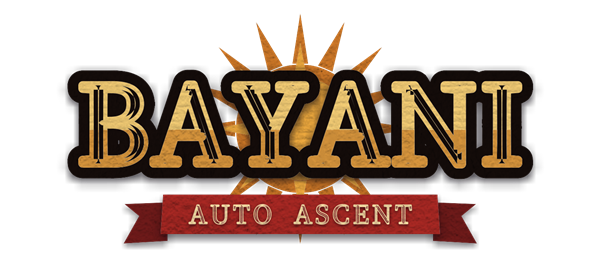

プライバシーポリシー
Bayani: Auto Ascent は、iPhone、Android、PC向けのオートバトラーです。完全にオフラインで遊ぶことができ、オンライン対戦では 他のプレイヤーと塔を登ることができます。このポリシーでは、ゲームが保存する情報、その理由、そして削除の方法を説明します。
要点
- 本名、メールアドレス、連絡先、支払い情報は収集しません。アカウントの作成も不要です。
- 広告の表示、広告トラッカーの使用、データの販売は行いません。
- スマートフォンでは、インターネットに接続していると、ゲームは起動時に端末から作られる匿名IDで当社のサーバーに サインインします。サーバーにはチケットとその増減の記録が保存されます。
- 購入はAppleまたはGoogleを通じて行われます。購入の処理中、Unityの購入サービスが購入情報と端末情報を受け取ります (購入を参照)。
- スマートフォンでは、ゲームは匿名のプレイ情報(どこまで登ったか、どのクラスで遊んだかなど)をGoogleのFirebase Analyticsに送り、ゲームの改善に役立てます。広告IDは使わず、広告もなく、販売もしません(プレイ分析を参照)。
- オンラインデータはゲーム内の設定 > オンラインデータを削除からいつでも削除できます。
1. 端末に残るもの
進行状況、設定、挑戦の記録、解放した難易度、製品版を所有しているかどうかは、お使いの端末にのみ保存されます。 端末の外に送られることはありません。ゲームをアンインストールすると削除されます。
2. 当社のサーバーに保存されるもの(オンライン対戦)
オンライン対戦とチケットは、当社のゲームサーバー(Nakama。DigitalOceanのシンガポールのサーバー)で動いています。iPhoneと Androidでは、インターネットに接続した状態でゲームを初めて起動したとき、端末がアプリに提供する識別子から匿名アカウントが 作られます(オンライン対戦の前でも毎日のチケットを受け取れるようにするためです)。このアカウントは、お名前、メールアドレス、 Apple・Google・Steamのアカウントとは結びついていません。このアカウントに次の情報を保存します:
- あなたのチケットと、その増減ごとの記録(初回のチケット、毎日のチケット、対戦への参加・勝利・返却、 チケットパックの購入)と日付
- 最後に毎日のチケットを受け取った日付
- 購入したチケットパックごとに:商品、ストアの取引IDと日付、ストアによる確認(同じ購入が二重に数えられないようにするため)
対戦中、あなたのカードの選択はサーバーを通じてその対戦の他のプレイヤーに送られ、すべての端末で同じ戦闘が再生されます。 対戦そのものは終了後に保存されません。他のプレイヤーに見えるのは、その対戦での席の名前とあなたの選択だけです。
ゲームが画面に表示されている間、オンラインのプレイヤー数を表示するためにサーバーとの接続を保ちます。サーバーは接続の数を 数えるだけで、それについて何も保存しません。ゲームがバックグラウンドに移ると接続は閉じられます。
一般的なインターネットサービスと同様に、サーバーは応答のためにお使いの端末のIPアドレスを処理し、サービスの運営と問題の修正の ために短期間の技術ログを保存します。
3. 購入
製品版とチケットパックはApp StoreまたはGoogle Playで購入され、 AppleまたはGoogleの プライバシーポリシーが適用されます。当社がカード情報や支払い情報を見ることはありません。チケットパックをお届けするため、 当社のサーバーはストアのレシートをAppleまたはGoogleに送って確認します。
ゲームは購入の処理にUnity TechnologiesのサービスであるUnity In-App Purchasingを使用しています。購入の処理中、 Unityは購入に関する情報(商品、価格、取引)、端末とアプリの識別子、端末の技術情報(機種、OS、言語)、おおよその位置 (IPアドレスから得られる国)、診断データを受け取り、購入サービスの運営と重複取引の防止に使います。これには Unityのプライバシーポリシーが適用されます。 ゲームに使われているUnityエンジンも、同じポリシーのもとで、端末のハードウェアとソフトウェアに関する個人を特定しない基本的な 情報をUnityに送ることがあります。
4. プレイ分析(スマートフォン)
iPhoneとAndroidでは、ゲームの遊ばれ方を知るためにGoogleのサービスであるFirebase Analyticsを使用しています。送られるのは次の情報です:インストール時に作られるランダムなアプリインスタンスID(お名前、メールアドレス、Apple・Googleのアカウント、広告IDではありません)。挑戦の開始・終了(難易度、到達した階、勝敗、メインのクラス、残りのお守り)、ライバルとの決闘の勝敗、敗れたモンスター、ショップ・製品版・チケットの画面を開いたこと、オンライン対戦の開始、アプリ内購入などのイベント。そしてFirebaseがすべてのアプリで集める、端末の機種、OS、アプリのバージョン、言語、おおよその位置(IPアドレスから得られる国)、ゲームを使った時間。広告用の保存と広告のパーソナライズは無効にしており、データを広告に使ったり販売したりすることはありません。GoogleはFirebaseのプライバシー規約に基づいてこれを処理し、最長14か月保存します。PC版・Steam版はこれらを一切送りません。
5. Steamでは
PCでは、ゲームと実績はValveのSteamworksサービスを通じて提供され、 Valveのプライバシーポリシーが適用されます。 当社がSteamのパスワード、メールアドレス、支払い情報を受け取ることはありません。
6. 情報の利用目的
オンライン対戦とチケットの運営、ゲームの改善のための遊ばれ方の把握、購入したものの提供、不正と重複購入の防止、問題の修正のためだけに利用します。 広告には利用せず、販売もしません。共有するのはゲームの運営に関わるサービスのみです:DigitalOcean(当社サーバーのホスト)、 AppleまたはGoogle(購入)、Unity(購入)、Google(Firebase Analytics、スマートフォンのみ)。
7. 保存場所と保存期間
当社のサーバーはシンガポールにあります。Unity、Apple、Googleは他の国でデータを処理することがあります。オンラインアカウント、 チケット、購入記録は、ゲームのオンライン対戦が運営されている間、またはあなたが削除するまで保存します。サーバーのログは 短期間のみ保存します。
8. データの削除
ゲーム内の設定 > オンラインデータを削除から削除できます。匿名アカウント、チケット、その記録が当社のサーバーから すぐに削除されます。この端末の分析IDもリセットされ、以後のイベントは以前のものと結びつきません。削除後、チケットは元に戻せません。製品版はAppleまたはGoogleのアカウントに属するため、引き続きあなたのものです。 初回のチケットを端末ごとに一度だけ渡すため、端末の識別子を一方向に変換した値(ハッシュ)のみを保存します。この値から元の 識別子に戻すことはできません。kuzostudiosph@gmail.com へのメールでもお手伝いします。ゲームをアンインストールすると、端末に保存されたものはすべて削除されます。
9. お子様について
Bayani: Auto Ascent は13歳未満のお子様を対象としておらず、お子様の個人情報を故意に収集することはありません。 お子様が個人情報を提供したと思われる場合はご連絡ください。削除いたします。
10. あなたの権利
お住まいの地域によっては(たとえば日本の個人情報保護法、EU・英国のGDPR、フィリピンの2012年データプライバシー法のもとで)、 データの開示、訂正、削除を求める権利や、その利用に異議を唱える権利がある場合があります。 kuzostudiosph@gmail.comまでご連絡ください。
11. 変更
このポリシーを変更する場合は、上部の日付を更新し、Discordでお知らせします。